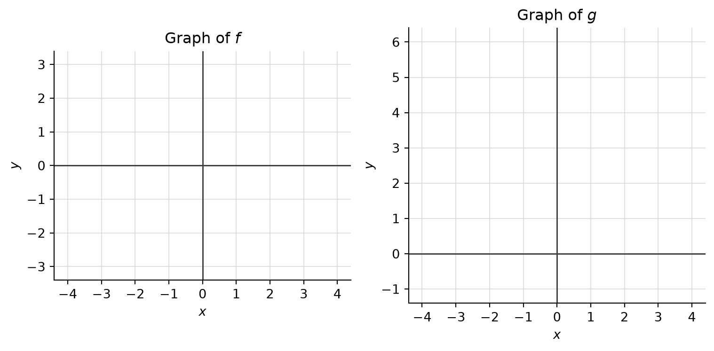

7 Activity: Properties of Functions
7.1 Background
We have met several properties a function can have: injective, monotone, even or odd, and — most important — continuous. In this activity we investigate all of them for the two functions
\[ f(x) = \begin{cases} \dfrac{x}{\lvert x \rvert} & x \neq 0,\\[2mm] 0 & x = 0, \end{cases} \qquad\qquad g(x) = \begin{cases} \dfrac{1}{x^{2}} & x \neq 0,\\[2mm] 0 & x = 0. \end{cases} \]
7.2 Step 1: Draw the graphs
Sketch the graph of each function on its own set of axes. Plot a few sample points first (e.g. \(x = \pm\tfrac12,\ \pm1,\ \pm2,\ \pm3\)), then connect them.
7.3 Step 2: Make an educated guess
From your graphs, try to answer the following.
- Is the function injective?
- Is it monotone? If so, is it strictly monotone? If not, can you find intervals — as large as possible — on which it is (strictly) monotone?
- Is it even, odd, or neither?
- Is it continuous everywhere? If not, at which \(x\) is it discontinuous?
Record short answers in the table; you will verify each one in the steps that follow.
| Property | \(f\) | \(g\) |
|---|---|---|
| Injective? (yes / no) | ||
| Monotone? Strictly? On which interval(s)? | ||
| Even, odd, or neither? | ||
| Continuous everywhere? If not, at which \(x\)? |
7.4 Verification: injectivity
Neither \(f\) nor \(g\) is injective. To prove this, it is enough to exhibit two inputs \(x \neq y\) with the same output.
7.5 Verification: even / odd
7.6 Verification: monotonicity
7.7 Continuity: the \(\varepsilon\)–\(\delta\) game
Both \(f\) and \(g\) are continuous at \(x_0 = 1\). Play the \(\varepsilon\)–\(\delta\) game from Definition 6.2.
7.8 Discontinuities
Both functions are discontinuous at \(x_0 = 0\). Here it is you who loses the game.